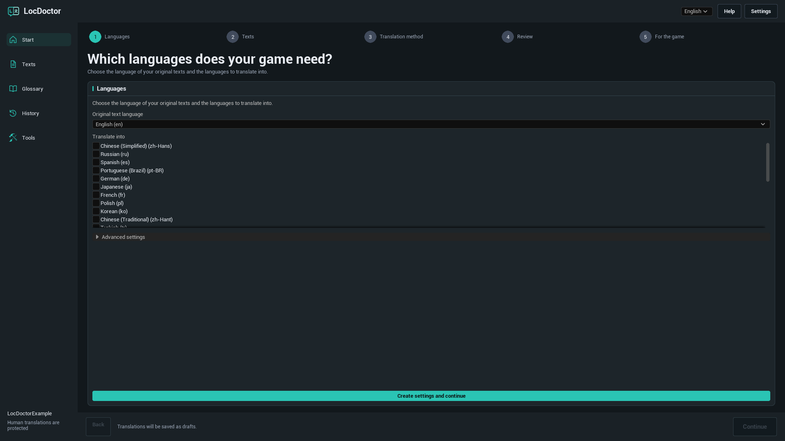
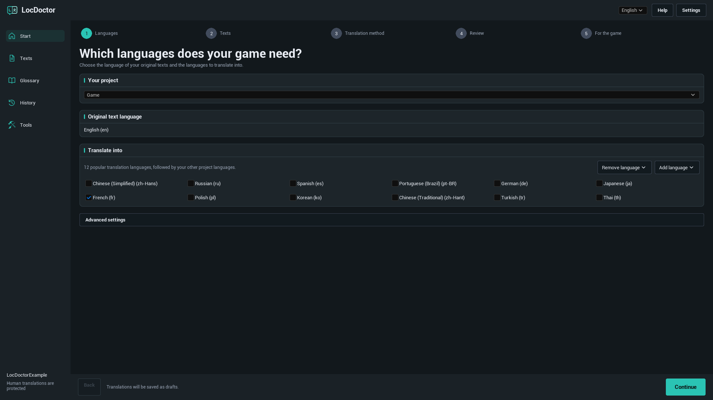
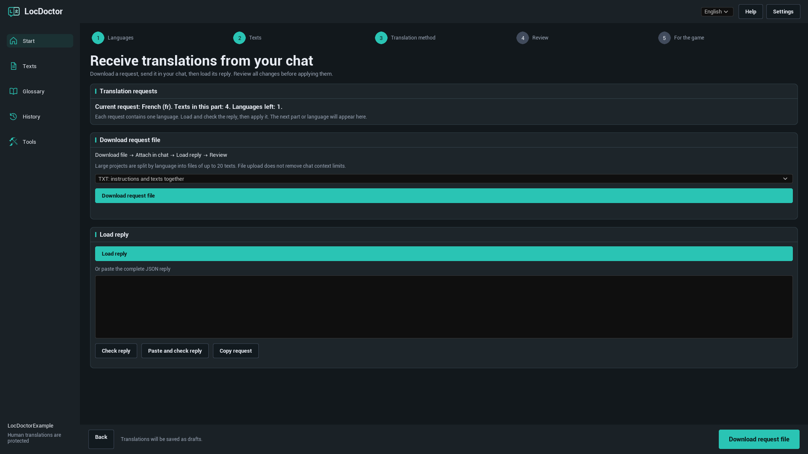
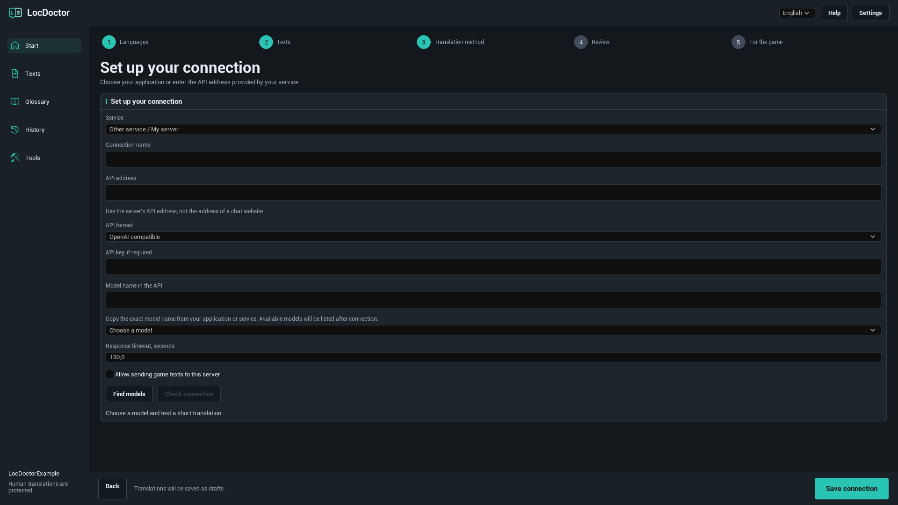
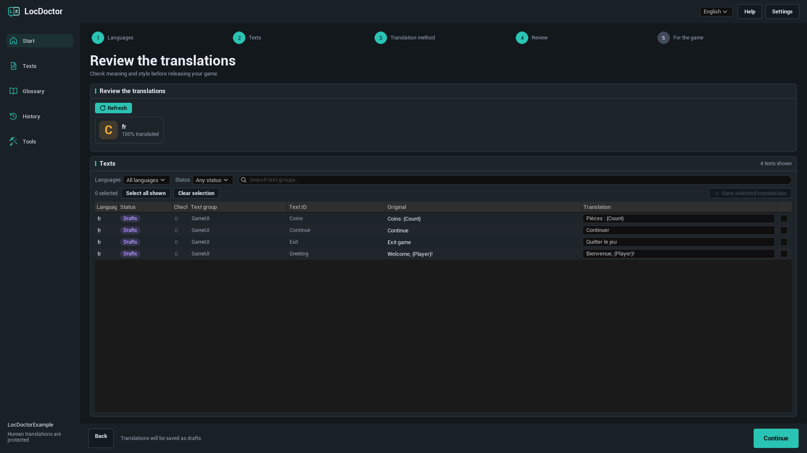
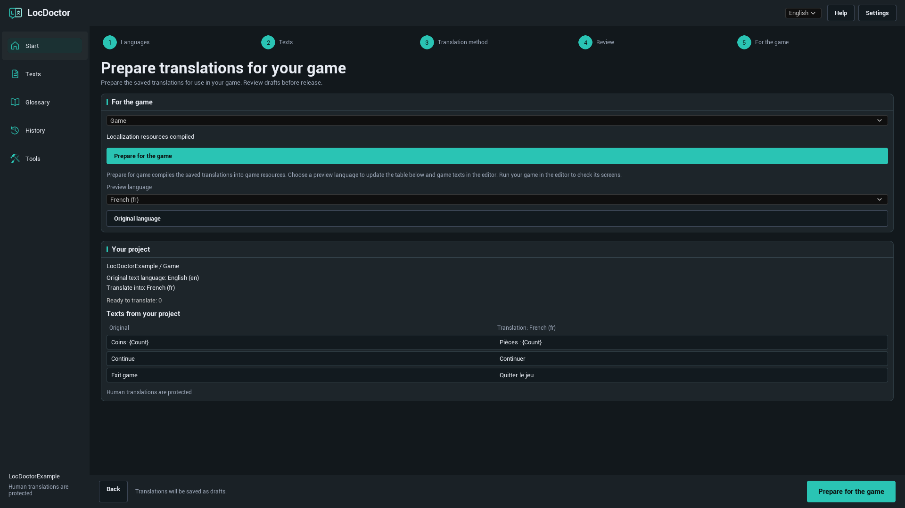

LOCDOCTOR 1.0.0 USER GUIDE
Translate your game.
Keep control of every word.
Translate Unreal Engine game text with a local model, your AI chat or an API service. Review the results in the editor, then prepare them for your game.
Choose the method you already have
GETTING STARTED
Installation
LocDoctor 1.0.0 supports Unreal Engine 5.7 and 5.8 on Windows 64-bit. Use the package that matches your engine version.
Install through Fab
Install the plugin for the matching engine using your Fab Library in the Epic Games Launcher. Open your project, enable LocDoctor in Edit > Plugins if needed, and restart the editor.
Install from a ZIP
- Close Unreal Editor.
- Extract the package so that
LocDoctor.upluginis directly inside<YourProject>/Plugins/LocDoctor/. If the ZIP already contains aLocDoctorfolder, place that folder insidePlugins. - Open the project. Enable LocDoctor in Edit > Plugins if needed, then restart the editor.
- Open Tools > LocDoctor.
YourProject/
YourProject.uproject
Plugins/
LocDoctor/
LocDoctor.uplugin
Resources/
Source/A package with compiled files also contains a Binaries folder. If you use a source-only package, Unreal needs a compatible C++ build toolchain to build the editor modules.
GETTING STARTED
Your first translation
Start with one language and a small set of game texts. Plugin button labels match this guide's language. Unreal Editor's own menu names are shown in English.
- Choose your languages. Open Tools > LocDoctor. Choose the language in which your game texts were written and at least one translation language. On first use, click Create settings and continue. Keep the advanced settings at their defaults unless your project needs a different asset folder or text target.
- Collect your texts. On the Texts step, click Collect texts. Save changed game assets if Unreal asks. Check that the project summary contains the texts you expect.
- Choose a translation method. Use On my computer, In my chat or Through an API. For automatic methods, select a model and click Check connection. This tests a short translation. After a successful test, the main button becomes Translate texts.
- Review the result. AI translations are saved as drafts. On the Review step, check each translation, edit it if needed, and save your selected translations.
- Prepare the game. On For the game, click Prepare for the game. Test the game in each language and include those languages in your packaging settings.

Languages and game text
Original language, translation languages and interface language
- Original text language: the language in which your source game text is written.
- Translate into: the languages to work on in the current translation job. Untick a language to leave it out of this job.
- Interface language: the selector at the top of LocDoctor. It changes the plugin interface only. English is the default.
A text target, usually named Game, is Unreal's localization configuration for a set of texts. If your project has several targets, select the one you want to translate.
Add or remove a language

The first suggestions are 12 popular translation languages. Click Add language to find another language by name or Unreal culture code. Click Remove language to remove a language from the text target's configuration. Saved translation files are kept so that you can add the language again later.
Which texts can be translated?
LocDoctor works with localizable FText and String Tables collected by Unreal's localization system. Ordinary FString values and texts marked as culture invariant are not automatically localizable. Use Tools > Project check to look for these cases.
TRANSLATION METHODS
On my computer
Use a downloaded text model through an application running on your computer. LocDoctor connects to the application's API server. It does not install applications or download models.
- Install your preferred model application. Download a text generation model that fits your computer's memory and supports your translation languages.
- Start the application and enable its local API server. Keep it running while you translate.
- In LocDoctor, choose On my computer, then Choose a model. Click Find models to refresh the list.
- Select a model. Click Check connection if a test has not already started, and wait for the short sample translation to finish.
- When the connection is ready, click Translate texts.
Set up your local application
| Application | What to start | Default API address |
|---|---|---|
| Ollama | Open Ollama with a downloaded local text model. Its local server normally starts with the application. | http://127.0.0.1:11434 |
| LM Studio | Open Developer and start the API server. Make a text model available to that server. | http://127.0.0.1:1234/v1 |
| Jan | Open Settings > Local API Server and start the server. If it requires a key, enter that same key in LocDoctor. | http://127.0.0.1:1337/v1LocDoctor also checks port 6767. |
| GPT4All | Open Settings > Application > Advanced and enable the Local API Server. Load a text model. | http://127.0.0.1:4891/v1 |
Use the address shown by your application if you changed its port. LocDoctor asks local servers for their model lists and also checks saved local connections. It does not scan your disks or need your installation folder.
Official setup guides: OllamaLM StudioJanGPT4All
Another application or a custom port
Use Other application or Other service / My server in the connection settings. Enter its API address, choose Ollama or OpenAI compatible as the API format, and enter the exact model name. A server such as llama.cpp, LocalAI or vLLM can work if its endpoint supports the selected format.
TRANSLATION METHODS
In my chat
Use an AI chat that accepts pasted text or file attachments. You send the request yourself, then bring the reply back to LocDoctor. This method does not require an API key.
- Choose In my chat. Read the Current request or First request label to see which language and part you are working on.
- Click Download request file. For your first attempt, choose TXT: instructions and texts together.
- Attach the file in your AI chat. Ask it to follow the included instructions and return the complete requested translation response.
- Click Load reply to import the reply file. Alternatively, paste the complete JSON reply into the reply field and click Check reply, or use Paste and check reply.
- Read the preview. If all checks pass, click Apply translations. They are saved as drafts.
- Download or copy the next request and repeat until no pending requests remain. Then review the translations.
Which file format should I use?

| Format | Use it for | What to attach |
|---|---|---|
| TXT | The simplest first attempt. | One file containing instructions and texts. |
| JSON | A chat or tool that works well with structured data. | The JSON request, including its instructions. |
| CSV | A table you want to inspect or share. | The CSV and its separate instructions file. |
Reply files can be JSON, TXT containing the complete JSON reply, or CSV with the columns batch, culture, i and t. Use Copy request if your chat cannot accept attachments. Sending a file does not remove a chat's context or upload limits.
What does Check reply validate?
LocDoctor checks the request identifier, language, text identifiers and formatting placeholders. Every requested item must appear exactly once. The game texts and glossary must still match the exported request.
If you changed the source, translation or glossary after exporting, prepare a new request. If the reply is incomplete or changes a placeholder, ask the chat to correct it. The active request is saved locally in your project so you can continue after reopening the editor.
TRANSLATION METHODS
Through an API
LocDoctor sends translation requests automatically to the service you configure. Create an API key in that service's account dashboard and check its model availability and billing before starting.
- Choose Through an API. Select a service preset such as OpenRouter, OpenAI, Google Gemini or Groq.
- Open Advanced settings. Enter your API key, if required. For a custom service, select Other service / My server and enter the service's documented API address and format.
- Click Find models and select one, or enter its exact Model name in the API if the service does not list models.
- Enable Allow sending game texts to this server for a server outside this computer.
- Click Check connection and wait for the short sample translation. Once it succeeds, click Translate texts.
Custom service connection

| Field | What to enter |
|---|---|
| Connection name | A name you will recognize, such as Team translation server. |
| API address | The documented API base address, for example https://openrouter.ai/api/v1. A chat website URL will not work. |
| API format | OpenAI compatible for a compatible Chat Completions endpoint, or Ollama for an Ollama endpoint. Unsupported API formats need a separate integration. |
| API key | The key issued by your service or server, if required. |
| Model name in the API | The exact identifier expected by that server. The display name on a website may be different. |
| Response timeout, seconds | A value from 1 to 600. Increase it for a slow model or server. |
API keys are saved in local user settings under the project's Saved/Config folder. These settings are not encrypted. Keys are excluded from LocDoctor's chat request files, translation history and reports.
REVIEW AND SHIP
Review translations
AI translations start as Drafts. Automatic checks help preserve formatting, but you still need to review meaning, tone and context.
- Open the Review step or the Texts page. Click Refresh if needed.
- Use the language and status filters to narrow the list. The guided review works with your selected translation languages.
- Compare the original and translation. Edit the translation field where a change is needed. Check names, terminology, placeholders, line breaks and any reported issues.
- Select the rows you want to save and click Save selected translations.
- Check the translated screens in your game before release.
| Status | Meaning |
|---|---|
| Untranslated | No saved translation for this text and language. |
| Drafts | An AI translation is saved and needs review. |
| Reviewed | The translation has been marked as reviewed. |
| Human translation | A human translation is protected from normal automatic replacement. |
| Outdated translations | The source has changed since the translation was made. Review it against the current source. |
Understand the progress count

Progress counts text and language pairs. One source text translated into four languages means four translation tasks. Processed shows how many tasks have been handled; inspect the saved results and any reported errors to confirm what succeeded.
Stopping automatic translation keeps completed work. Unfinished work can be resumed where the saved task is available. Existing human translations are protected in normal automatic jobs.
Formatting placeholders
Keep variables such as {Player} and {Count}, Rich Text tags and line breaks intact. Chat requests may replace formatting with protected tokens such as ⟦LD0⟧; the model must copy those tokens exactly. LocDoctor restores the original formatting when it applies a valid reply.
Complex plural and gender expressions require manual review. Translate the text inside each branch without changing the expression's structure.
Glossary and history
Keep your terminology consistent
- Open Glossary and click Add term.
- Enter a term. Choose Do not translate for a name that should stay unchanged, or Required translation to set an exact translation.
- Set a translation for the needed languages and choose case matching if appropriate.
- Click Save glossary before preparing new requests.
For example, keep a character's name unchanged, or give a gameplay term a specific translation in each language. The glossary is included in new translation requests. Changing it can invalidate an already exported chat request.
Restore an earlier change
Open History, find the saved batch by target, language and time, and click Restore. LocDoctor checks for newer edits before restoring older data. If those edits conflict, review them before trying to restore.
If a write was interrupted, the next opening may show Restore interrupted changes. Use its Restore action to recover the saved originals before continuing.
REVIEW AND SHIP
Prepare for the game
This step compiles your saved translations into Unreal's localization resources. The finished game uses these resources; LocDoctor's editor interface does not run inside the shipped game.
- Finish reviewing the translations you plan to ship.
- Open For the game, select the text target, and click Prepare for the game. Wait for Localization resources compiled.
- Select a Preview language. This updates the project's text sample and localized game text in the editor. Run your game in the editor and check its screens.
- Click Original language to end the preview.
- Open Project Settings > Packaging > Localizations to Package and include every language you want to ship. Check that the project's internationalization settings support those languages, then test a packaged build.
Compile again after saving new translations. If a language works in the editor but not in a packaged build, check that its localization resources and culture data were included in the build.

If characters appear as squares or are missing, use Tools > Fonts and check your game's font assets and fallback fonts for that language.
Tools and file exchange
Project check
Open Tools > Project check and run a check. Review the reported locations for text patterns that can prevent localization, such as hardcoded strings, culture invariant text, conflicting keys or phrases assembled from fragments. The first check can take longer while Unreal loads assets.
Fonts
Open Tools > Fonts to check whether your selected game fonts contain the characters in your translations. Review missing characters and incomplete checks, then verify the result on actual game screens.
Work with a translator
Open Tools > Import and export to exchange translations through CSV or PO files.
- Export the selected target and language in the required format.
- Let the translator edit the translation values while keeping text identifiers, source values and placeholders intact.
- Import the returned file and review the proposed changes.
- Resolve conflicts by choosing Keep project translations or Use file translations, then click Save imported translations.
Chat request CSV and translator exchange CSV serve different workflows. Import a chat response through In my chat > Load reply. Spreadsheet XLSX and XLIFF are not supported in this version.
Troubleshooting
LocDoctor is missing from Tools
Open Edit > Plugins, search for LocDoctor and enable it. Restart the editor. If it is missing from the plugin list, check the installation folder and use the package for your engine version. For a source-only package, install Unreal's compatible C++ build tools and build the editor target.
No texts were collected
Save your game assets, check the text target's gather folder, and collect texts again. Texts must use localizable FText or String Tables and be included in Unreal's gather configuration. Run Tools > Project check to inspect hardcoded and nonlocalizable strings.
Translate texts is not available
Choose at least one translation language and collect texts. For automatic methods, select a model and complete Check connection first. If there are no pending texts, use Texts to edit existing translations, or collect new texts and select another language.
The local model list is empty
Keep your model application open, enable its local API server, and install or load a text generation model. Check its API address and port. For a custom server, enter the exact model name in advanced settings. An application being installed does not mean that its API server is running.
Check connection times out
Allow time for a local model to load, close other applications using GPU memory, or use a smaller model. Increase Response timeout, seconds in the connection settings. If the server never responds, check its address, port and whether a system proxy is redirecting localhost requests.
The API returns 401 or 403
Check that the key belongs to the selected service, is still valid, and has the required model access. For a local server with authentication, use the key from that application's API server settings.
The API returns 429 or a model error
Wait before trying again or select another available model. Check the service's account limits and model availability. A successful model list request does not guarantee that the service can generate a translation.
The chat request contains only one of my languages
This is expected. Each request contains one language and up to 20 texts. Load, check and apply the reply, then prepare the next request. LocDoctor displays the current or next language above the file controls.
My chat reply was rejected
Use the complete response for the active request. Ask the chat to return every requested item exactly once, keep the batch and culture values unchanged, and preserve every placeholder. If you edited project texts or the glossary after exporting, create a new request.
Changing Preview language does not change the game
Save your translations and click Prepare for the game first. Confirm that the preview language has translations in the chosen target. Preview affects localized game text, not Unreal Editor menus. Hardcoded strings and text that was not collected will not change.
A language is missing in the packaged game
Compile the latest saved translations. Include that language in Project Settings > Packaging > Localizations to Package and use internationalization settings that contain its culture data. Test a newly packaged build.
Translated characters appear as squares
Check your game's font and fallback fonts for the affected language. Use Tools > Fonts to inspect character coverage, then test the actual widgets and game screens.
Common questions
Do I need a paid AI subscription?
No subscription is included with LocDoctor. Use a local model, your own chat access or your service's API access. Availability, usage limits and any charges depend on the application or service you choose.
Can local translation work without internet?
Yes, with a model that is downloaded and runs locally. Application and model downloads may need internet first. A cloud-hosted model still uses its provider even when your application runs on your computer.
Does LocDoctor translate images, voice or subtitles in video?
It translates localizable game text collected by Unreal. Image text, audio and video subtitles require their own source text and content workflows.
Does removing a language delete its translations?
No. Remove language removes it from the text target's language configuration while keeping the saved translation files. Unticking a language only excludes it from the current translation job.
Which interface languages are available?
English, Russian, German, French, Spanish, Portuguese (Brazil), Chinese (Simplified), Japanese and Korean. Your game's translation languages are configured separately.
Does the shipped game need LocDoctor or an AI connection?
The plugin is used in Unreal Editor. The finished game uses Unreal's compiled localization resources, so playing it does not need the translation model or service.
Version and support
This guide covers LocDoctor 1.0.0 for Unreal Engine 5.7 and 5.8 on Windows 64-bit.
1.0.0
Game text translation through local models, browser chat files and compatible APIs. Includes language setup, draft review, glossary, history, localization compilation, project checks, font checks, and CSV / PO exchange.
When reporting a problem
Contact support: nexusforgeuesupport@gmail.com.
Include your Unreal Engine version, LocDoctor version, translation method and exact error message. For connection problems, include the application or service name and model name. A full-size screenshot helps show the current step.
Remove API keys and other private information from screenshots and logs before sharing them.